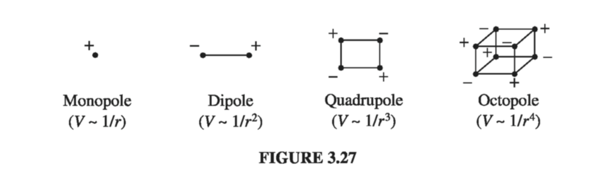
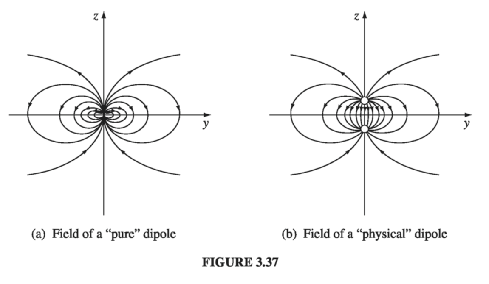

3.4: Multipole Expansion#
3.4.1: Approximate Potentials at Large Distances#
If you are very far away from a localized charge distribution, it “looks” like a point charge, and the potential is - to good approximation - \( (1/4 \pi \epsilon_0) Q/r \), where \( Q \) is the total charge. We have often used this as a check on formulas for V. But what if \( Q \) is zero? You might reply that the potential is then approximately zero, and of course, you’re right in a sense (indeed, the potential at large r is pretty small even if Q is not zero). But we’re looking for something a bit more informative than that.
Example 3.10#
A (physical) electric dipole consists of two equal and opposite charges \( (\pm q) \) separated by a distance d. Find the approximate potential at points far from the dipole
Let \( \Delta r _- \) be the distance from \( -q \) and \( \Delta r _{+} \) be the distance from \( +q \) (Fig. 3.26). Then
and (from the law of cosines),
We’re interested in the regime \( r \gg d \), so the third term is negligible, and the binomial expansion yields
Thus
and hence
The potential of a dipole goes like \( 1/r^2 \) at large r; as we might have anticipated, it falls off more rapidly than the potential of a point charge. If we put together a pair of equal and opposite dipoles to make a quadrupole, the potential goes like \( 1/r^3 \); for back-to-back quadrupoles (an octopole), it goes like \( 1/r^4 \), and so on. Figure 3.27 summarizes the hierarchy; for completeness I have included the electric monopole (point charge), whose potential, of course, goes like \( 1/r \)

Example 3.10 pertains to a very special charge configuration. I propose now to develop a systematic expansion for the potential of any localized charge distribution, in powers of \( 1/r \). Figure 3.28 defines the relevant variables; the potential at r is given by
 Using the law of cosines,
Using the law of cosines,
where \( \alpha \) is the angle between \( \vec{r} \) and \( \vec{r'} \). Thus,
with
For points well outside the charge distribution, \( \epsilon \) is much less than 1, and this invites a binomial expansion:
or, in terms of \( r, r' \), and \( \alpha \),
In the last step, I have collected together like powers of \( (r'/r) \); surprisingly, their coefficients (the terms in parentheses) are Legendre polynomials! The remarkable result is that
Substituting this back into (195), and noting that \( r \) is constant, as far as the integration is concerned, I conclude that
or, more explicitly,
This is the desired result - the multipole expansion of \( V \) in powers of \( 1/r \). The first term \( (n=0) \) is the monopole contribution (it goes like \( 1/r \)); the second \( (n=1) \) is the dipole (it goes like \( 1/r^2 \) ); the third is quadrupole; the fourth octopole, and so on. Remember that \( \alpha \) is the angle between \( \vec{r} \) and \( \vec{r'} \), so the integrals depend on the direction to the field point. If you are interested in the potential along the \( z' \) axis (or - putting it the other way round - if you orient your \( \vec{r'} \) coordinates so the \( z' \) axis lies along \( \vec{r} \)), then \( \alpha \) is the usual polar angle \( \theta' \). As it stands, (199) is exact, but it is useful primarily as an approximation scheme: the lowest nonzero term in the expansion provides the approximate potential at large r, and the successive terms tell us how to improve the approximation if greater precision is required.
3.4.2: The Monopole and Dipole Terms#
Ordinarily, the multipole expansion is dominated (at large r) by the monopole term:
where \( Q =\int \rho \mathrm{d}{\tau} \) is the total charge of the configuration. This is just what we expect for the approximate potential at large distances from the charge. For a point charge at the origin, \( V_{mon} \) is the exact potential, not merely a first approximation at large r; in this case, all the higher multipoles vanish. If the total charge is zero, the dominant term in the potential will be the dipole (unless, of course, it also vanishes):
Since \( \alpha \) is the angle between \( r' \) and \( r \) (Fig 2.38),
and the dipole potential can be written more succinctly:
This integral (which does not depend on \( \vec{r} \) ) is called the dipole moment of the distribution:
and the dipole contribution to the potential simplifies to
The dipole moment is determined by the geometry (size, shape, and density) of the charge distribution. (201) translates in the usual way (Sect 2.1.4) for point, line, and surface charges. Thus, the dipole moment for a collection of point charges is
For a physical dipole (equal and opposite charges \( \pm q \)),
where \( \vec{d} \) is the vector from the negative charge to the positive one (Fig. 3.29).

Is this consistent with what we got in Example 3.10? Yes: If you put (204) into (202), you recover (194). Notice, however, that this is only the approximate potential of the physical dipole - evidently there are higher multipole contributions. Of course, as you go farther and farther away, \( V_{dip} \) becomes a better and better approximation, since the higher terms die off more rapidly with increasing \( r \). By the same token, at a fixed \( r \) the dipole approximation improves as you shrink the separation distance \( d \). To construct a perfect dipole whose potential is given exactly by (202), you’d have to let \( d \) approach zero. Unfortunately you then lose the dipole term too, unless you simultaneously arrange for q to go to infinity! A physical dipole becomes a pure dipole, then, in the rather artificial limit \( d \rightarrow 0. q \rightarrow \infty \), with the product \( qd = p \) held fixed. When someone uses the word “dipole,” you can’t always tell whether they mean a physical dipole (with finite separation between the charges) or an ideal dipole. If in doubt, assume that d is small enough that you can safely apply (202).
Dipole moments are vectors, and they add accordingly: if you have two dipoles \( \vec{p_1} \) and \( \vec{p_2} \), the total dipole moment is \( \vec{p_1} + \vec{p_2} \). For instance, with four charges at the corners of a square, as shown in Fig. 3.30, the net dipole moment is zero. You can see this by combining the charges in pairs or by adding up the four contributions individually using (203). This is a quadrupole, as I indicated earlier, and its potential is dominated by the quadrupole term in the multipole expansion.

3.4.3: Origin of Coordinates in Multipole Expansions#
I mentioned earlier that a point charge at the origin constitutes a “pure” monopole. If it is not at the origin, it’s no longer a pure monopole. For instance, the charge in Fig. 3.32 has a dipole moment \( \vec{p} = q d \hat{y} \), and a corresponding dipole term in its potential. The monopole potential \( (1/4 \pi \epsilon_0) q/r \) is not quite correct for this configuration; rather, the exact potential is \( (1/4 \pi \epsilon_0) q/\Delta r \). The multipole expansion is, remember, a series in inverse powers of r (the distance to the origin), and when we expand \( 1/\Delta r \), we get all powers, not just the first.
So moving the origin (or, what amounts to the same thing, moving the charge) can radically alter a multipole expansion. The monopole moment \( Q \) does not change, since the total charge is obviously independent of the coordinate system. (In Fig. 3.32, the monopole term was unaffected when we moved q away from the origin - it’s just that it was no longer the whole story: a dipole term - and for that matter all higher poles - appeared as well.) Ordinarily, the dipole moment does change when you shift the origin, but there is an important exception: If the total charge is zero, then the dipole moment is independent of the choice of origin. For suppose we displace the origin by an amount \( \vec{a} \) (Fig. 3.33). The new dipole moment is then

In particular, if \( Q = 0 \), the \( \vec{p_2} = \vec{p} \). So if someone asks for the dipole moment in Fig 3.34(a), you can answer with confidence “\( q \vec{d} \),” but if you’re asked for the dipole moment in Fig 3.34(b), the appropriate response would be “With respect to what origin?”

3.4.4: The Electric Field of a Dipole#
So far we have only worked with potentials. Now I would like to calculate the electric field of a (perfect) dipole. If we choose coordinates so that \( \vec{p} \) is at the origin and points in the z direction (Fig. 3.36), then the potential at \( r, \theta \) is (202):

To get the field, we take the negative gradient of \( V \):
Thus,
This formula makes explicit reference to a particular coordinate system (spherical) and assumes a particular orientation for \( \vec{p} \) (along z). It can be recast in a coordinate-free form, analogous to the potential in (202) - See problem 3.36.
Notice that the dipole falls off as the inverse cube of r; the monopole field \( (Q / 4 \pi \epsilon_0 r^2) \hat{r} \) goes as the inverse square, of course. Quadrupole fields go like \( 1/r^4 \), octopole like \( 1/r^5 \), and so on. (This merely reflects how the respective potentials fall off - the gradient introduces another factor of \( 1/r \) ).
Figure 3.37(a) shows the field lines of a “pure” dipole (206). For comparison, I have also sketched the field lines for a “physical” dipole, in Fig 3.37(b). Notice how similar the two pictures become if you blot out the central region; up close, however, they are entirely different. Only for points \( r \gg d \) does (206) represent a valid approximation to the field of a physical dipole. As I mentioned earlier, this regime can be reached either by going to large \( r \) or by squeezing the charges very close together. 